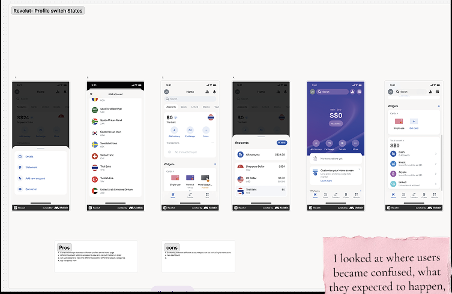
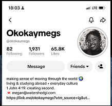
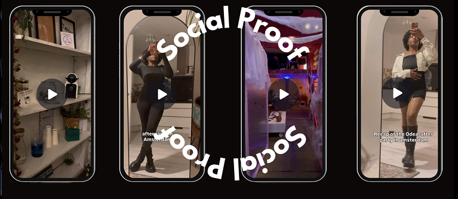

02/Selected Work
CAPITEC
During my UX Research internship at Capitec, I explored how users moved through the mobile banking experience when switching between profiles.

I looked at where users became confused, what they expected to happen, and how the existing experience supported or interrupted those expectations.
@OKOKAYMEGS


I create content around living, studying and building a sense of belonging across different cultures, using everyday observations to explore how people experience places differently. My collaborations have focused on community engagement, international students, belonging and cultural insight, creating content that helps audiences feel more connected to the places and communities around them.